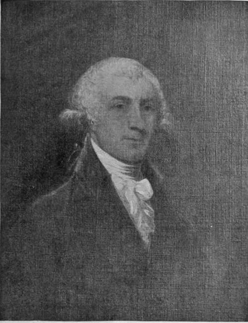

Washington In The Territory Of Columbia. Continued
Description
This section is from the book "The National Capitol. Its Architecture Art And History", by George C. Hazelton, Jr. Also available from Amazon: The National Capitol Its Architecture Art and History.
Washington In The Territory Of Columbia. Continued
"After these opinions, there could remain no hesitation how to decide; and Mr. Hoban was accordingly informed that the foundation would be begun upon the plan exhibited by Mr. Hallet, leaving the recess in the east front open for further consideration.
" It seems to be the wish that the portico of the east front, which was in Doctor Thornton's original plan, should be preserved in this of Mr. Hallet's. The recess which Mr. Hallet proposes in that front, strikes every one who has viewed the plan, unpleasantly, as the space between the two wings or projections, is too contracted to give it the noble appearance of the buildings of which it is an imitation ; and it has been intimated that the reason of his proposing the recess instead of a portico, is to make it in one essential feature different from Doctor Thornton's plan. But whether the portico or the recess should be finally concluded upon will make no difference in the commencement of the foundations of the building, except in that particular part—and Mr. Hallet is directed to make such sketches of the Portico, before the work will be affected by it, as will show the advantage or disadvantage thereof. The ostensible objection of Mr. Hallet to the adoption of Doctor Thornton's east front is principally the depreciation of light and air, in a degree, to the apartments designed for the Senate and Representatives".
Thornton's original plans have been lost; but from the data at hand, it would seem that he conceived in the central building a grand vestibule, with a portico on the east, and another large circular room on the western front. The latter chamber, for conference, was to be lighted by small elevated windows and have for its western entrance a single door-way, opening upon a semi-circular portico, whence a broad expanse of steps ran to the ground.
Hallet proposed a square cen.ter in place of the vestibule, having an open court on the ground floor containing a turn for carriages. The only dome rose above a circular conference room on the west. The external appearance of the walls, too, was much altered; and the columns on both the east and the west were extended to the full height of the structure. The pleasing effect of the present basement-exterior with the graceful pilasters above was entirely destroyed.
In a report to Congress in 1804, Latrobe, then architect of the Capitol, criticises the work of Thornton on the ground that he furnished simply a picture and not a plan. In a letter to Congress * answering this report, Thornton himself furnishes an insight into the relation between his own plans and those of Hallet: " Mr. Hallet changed and diminished the Senate room, which is now too small. He laid square the foundation at the centre building, excluding the dome; and when General Washington saw the extent of the alterations proposed, he expressed his disapprobation in a style of such warmth as his dignity and self command seldom permitted. . . . Mr. Hallet was desirous not merely of altering what might be approved, but even what was most approved. He made some judicious alterations, but in other instances he did injury".
It was quite impossible for amicable relations long to continue between Thornton and Hallet f under these circumstances. Hallet was, no doubt, a skillful architect; and his ideas for reducing the cost of the building one-half by judicious changes, mainly in size, had met the encouragement of all, and had led to certain modifications in the designs looking toward the accomplishment of that end. But he was not content. His spirit throughout shows that he was jealous of Thornton's success and constantly attempted to supplant the latter's work by alterations of his plans and by changes in the execution.
On September 12, 1794, the President appointed Thornton one of the Commissioners in charge of the District and Federal buildings, and this was doubtless that he might personally see his plans carried out. " When General Washington," he says, " honored me with the appointment of commissioner he requested that I should restore the building to a correspondence with the original plan." In this capacity Thornton had a supervisory control of the Capitol until 1802. when the office was abolished. In June, prior to his appointment, Hallet was finally discharged, after holding his office two years. Trumbull was then in London, and upon the receipt of a letter from the Commissioners, followed by a consultation with West, the artist, and Wyatt, the principal architect in London, contracted with George Hadfield, a fellow-student at the Royal Academy and the winner of ail its academic prizes, to proceed immediately to America and superintend the work at the Capitol. Hadfield was appointed October 15, 1795. On March rrth of the next year, Mr. Jeremiah Smith, in a communication to the House of Representatives, reported: "The foundation of the Capitol is laid; the foundation wall under ground and above is of different thicknesses, and is computed to average fourteen feet high and nine feet thick. The freestone work is commenced on the north wing; it is of different heights, but may average three feet and a half; the interior walls are carried up the same height".
See Appendix, p. 252 2
See Commissioners' letter, Appendix, p. 231.
Hadfield, like Hallet, was not content with the supervision of the work for which he had been employed, and soon attempted to engraft his own plans into the construction. The President, however, had already had too much difficulty with the quibbles of architects to listen placidly* to the new designs. When Hadfield found he could not control the matter, he gave notice to the Commissioners that, at the' expiration of his contract, which would be in three months, he would quit the public employment. But, to his astonishment, finding a ready acquiescence on the part of the authorities, and being offered his passage money to England at once, " he seems to have considered the subject better," write the Commissioners, "and . applied to withdraw his notice, promising every attention to carrying on the Capitol as approved of by the President." The Commissioners permitted him to continue upon the work until the expiration of his contract.
Hadfield was, no doubt, a man of some theoretical attainments, as the Commissioners write, March 29, 1797, that he " has drawn the plan of all the public offices to be erected in the City of Washington, and which have met with the approbation of the President and the several Departments for which they are intended." His limitations are well summed up in their letter of the 25th of June, 1798, to the Secretary of State : " We believe Mr. Hadfield to be a young man of taste but we have found him extremely deficient in practical knowledge as an architect . . . under Mr. Hadfield's directions it never could have been completed in an effectual manner. We therefore gave Mr. Hoban (who has heretofore superintended the President's house) the immediate superintendence of the Capitol." Trumbull, however, is true to his protege : " His services were soon dispensed with, not because his knowledge was not eminent, but because his integrity compelled him to say, that parts of the original plan could not be executed. Poor Hatfield languished many years in obscurity at Washington, where however, towards the close of his life, he had the opportunity of erecting a noble monument to himself in the city hall, a beautiful building, in which is no waste of space or materials".
* See Washington's letter, Appendix, p. 251.
DR. WILLIAM THORNTON.
James Hoban, who had settled in Charleston, S. C, prior to the Revolution, was a native of Ireland. He came to Washington in July, 1792, and on the 18th was employed at a salary of three hundred guineas a year. He seems to have been a reliable and good man and to have enjoyed the respect and friendship of Thornton and others with whom he was associated. Hoban planned, built, and rebuilt the White House; and, indeed, was engaged upon the public buildings for more than twenty-five years, though his supervision of the construction at the Capitol, whenever the Commissioners found it necessary to utilize him there and possible to relieve him from other work, ended in 1802. It fell to his lot to protect the public interest by carefully rebuilding the foundation walls of Congress House, which the contractors had fraudulently constructed by loosely dumping in place broken stone and mortar from wheelbarrows. This early piece of knavery gave rise to the expression, " The Continental Trowel".
Thus, strange to say, the designs of the original building, and the model in accordance with which the classic Capitol has grown to completion, were not conceived by a professional architect. Neither Hallet, Hadfield nor Hoban designed any portion of the present structure. Thornton, however, was no ordinary man. He was poet, artist, scholar, inventor. He was the Father of the Patent Office, having held the position of clerk in charge of the patents, at $1,400 per year, under an appointment from Jefferson; and was virtually its first commissioner, for later his office became known as Superintendent of Patents, and his salary raised to $2,000 a year. In 1810 he moved the models, patents and records of the Patent Office into Blodgett's Hotel, where Congress afterwards met for a short period.
An universal genius, Thornton was the friend of the early Presidents, and the companion of the best in the land. He had a love for fast horses, and owned several, which did not lessen his attractiveness in the estimation of many of the distinguished wits and beaux of his day. He drew plans for a number of the finest old places in Washington (among them the " haunted" Octagon or Tayloe house), many of which still stand as monuments to his genius. He was born on the island of Tortola, in the West Indies, was educated in medicine in England and Paris, and traveled extensively in accomplishing himself. He came to America, and was married in Philadelphia in 1790. Three years later he moved to Washington, where he lived highly respected until his death, March 28, 1828.
Continue to: